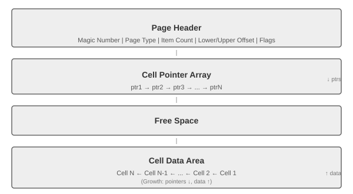
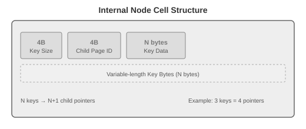
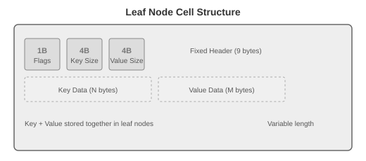
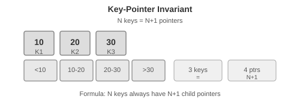

4장 - B-Tree 구현 (Implementing BTrees)
개요
이 장에서는 디스크 기반 B-Tree 구현에 특화된 개념들을 다룹니다.
페이지 헤더 (Page Header)
페이지 헤더는 네비게이션, 유지보수, 최적화에 사용되는 페이지 관련 정보를 담습니다.
- 플래그 (페이지 내용/레이아웃)
- 셀 개수
- Lower/Upper 오프셋 (빈 공간 표시)
- 매직 넘버 (유효성 검사)
📐 페이지 전체 구조
- Magic Number
- Page Type
- Item Count
- Lower/Upper Offset
- Rightmost Pointer
- Flags"] PointerArray["Cell Pointer Array
(오프셋 배열)"] FreeSpace["Free Space
(사용 가능한 영역)"] CellArea["Cell Data Area
(실제 데이터)"] end Header --> PointerArray PointerArray --> FreeSpace FreeSpace --> CellArea
📐 페이지 레이아웃 상세

🔍 포인터 유형 정리
| 포인터 종류 | 위치 | 설명 |
|---|---|---|
| Child Pointer | 셀 내부 | 자식 페이지 ID |
| Rightmost Pointer | 헤더 | 가장 오른쪽 자식 |
| Sibling Pointer | 헤더 | 좌/우 형제 페이지 |
| Overflow Pointer | 셀 내부 | 오버플로 페이지 ID |
| Parent Pointer | 메모리만 | 부모 페이지 (디스크 미저장) |
📦 셀 구조: Internal Node vs Leaf Node
Internal Node (내부 노드) - 인덱스용

Leaf Node (리프 노드) - 데이터 저장용

🔑 키-포인터 불변식

📏 페이지 크기 예시 (4KB)
| 영역 | 크기 | 설명 |
|---|---|---|
| Header | ~50 bytes | 고정 크기 |
| Pointer Array | ~400 bytes | 4B × 최대 키 수 |
| Free Space | ~1000 bytes | 여유 공간 |
| Cell Area | ~2646 bytes | 실제 데이터 |
형제 링크 (Sibling Links)
좌우 형제 페이지를 가리키는 전/후방 링크를 저장합니다. 부모로 올라가지 않고도 인접 노드를 찾을 수 있지만, 분할/병합 시 복잡성이 증가합니다.
오른쪽 포인터 (Rightmost Pointers)
B-Tree 키보다 포인터가 하나 더 많다는 불변식. SQLite는 헤더에, PostgreSQL은 high-key 방식으로 관리합니다.
노드 High Keys
high key는 노드 하위 트리에 저장될 수 있는 최대 키를 나타냅니다. PostgreSQL의 Blink-Tree에서 사용합니다.
오버플로 페이지 (Overflow Pages)
가변 크기 값이 페이지 크기를 초과하면 오버플로 페이지에 연결합니다.
| 개념 | 설명 |
|---|---|
| Primary Page | 원본 페이지 |
| Overflow Page | 연결된 확장 페이지 |
| max_payload_size | 페이지당 최대 페이로드 |
다이어그램: 오버플로 페이지 구조
이진 탐색 (Binary Search)
페이지 내부 키는 오프셋 배열로 관리됩니다. 이진 탐색으로 중간 오프셋을 선택하고 해당 셀을 읽어 비교합니다.
다이어그램: 이진 탐색 (간접 포인터)
다이어그램: 노드 분할 과정
브레드크럼 (BTStack)
분할/병합 시 상향 전파를 위해 루트→리프 경로를 스택에 저장합니다. PostgreSQL의 BTStack이 대표적입니다.
다이어그램: BTStack (브레드크럼)
리밸런싱 (Rebalancing)
분할/병합을 연기하고 같은 레벨 내에서 요소를 이동시켜 노드 점유율을 개선합니다. B*-Tree는 2/3 점유율을 유지합니다.
다이어그램: 리밸런싱 (요소 이동)
오른쪽 전용 Append
자동 증가 키 사용 시 오른쪽 리프에만 삽입해 분할을 최소화합니다. PostgreSQL fastpath, SQLite quickbalance가 대표적입니다.
벌크 로딩 (Bulk Loading)
정렬된 데이터를 페이지 단위로 쓰고 상위 노드를 구성해 분할을 완전히 회피합니다.
압축과 블록 패딩
페이지 단위 압축은 독립적 압축/해제를 허용하지만, 압축된 페이지가 디스크 블록보다 작을 때 추가 로드가 발생할 수 있습니다.
유지보수: Vacuum/Compaction
삭제/업데이트로 인한 조각화를 정리하고 페이지를 재작성합니다. 프리리스트에 반환하여 공간을 회수합니다.
다이어그램: 조각화된 페이지 예시
📌 4장의 핵심: 디스크 기반 B-Tree 구현
4장의 제목 "Implementing BTrees"는 프로그래밍적 구현이 아니라, 디스크 환경(온디스크)에서의 B-Tree 구현을 의미합니다.
왜 디스크 환경인가?
- 메모리는 휘발적이고 크기가 제한됨
- 디스크는 비휘발적이고 대용량 데이터 저장 가능
- 하지만 디스크 접근(I/O)은 메모리 접근보다 수천 배 느림
디스크 기반 구현의 핵심 과제
| 과제 | 디스크 관점 해결책 |
|---|---|
| I/O 최소화 | 큰 팬아웃 (페이지당 많은 키) |
| 로컬리티 | 연속된 데이터는 같은 페이지에 배치 |
| 가변 크기 값 | Overflow 페이지 연결 |
| 지속성 | WAL, 체크포인트, fsync |
| 조각화 | Vacuum/Compaction |
디스크 vs 메모리 B-Tree 동작 비교
핵심: 디스크 B-Tree는 "한 번의 I/O로 최대한 많은 데이터를 가져오는 것"이 목표입니다.
따라서 4장에서는:
- 페이지 구조 (헤더, 셀, 오프셋 배열)
- 오버플로 페이지 (대용량 값 처리)
- 이진 탐색 + 간접 포인터
- 브레드크럼 (분할/병합 추적)
- 리밸런싱 & 최적화
- 유지보수 (Vacuum)
등을 다룹니다 — 모두 디스크 환경을 위한 구현 세부사항입니다.
Original English Text
Chapter 4: Implementing BTrees
In the previous chapter, we talked about general principles of binary format composition, and learned how to create cells, build hierarchies, and connect them to pages using pointers. These concepts are applicable for both in-place update and append-only storage structures. In this chapter, we discuss some concepts specific to B-Trees.
The sections in this chapter are split into three logical groups. First, we discuss organization: how to establish relationships between keys and pointers, and how to implement headers and links between pages.
Next, we discuss processes that occur during root-to-leaf descends, namely how to perform binary search and how to collect breadcrumbs and keep track of parent nodes in case we later have to split or merge nodes.
Lastly, we discuss optimization techniques (rebalancing, right-only appends, and bulk loading), maintenance processes, and garbage collection.
Page Header
The page header holds information about the page that can be used for navigation, maintenance, and optimizations. It usually contains flags that describe page contents and layout, number of cells in the page, lower and upper offsets marking the empty space, and other useful metadata.
For example, PostgreSQL stores the page size and layout version in the header. In MySQL InnoDB, page header holds the number of heap records, level, and some other implementation-specific values. In SQLite, page header stores the number of cells and a rightmost pointer.
Magic Numbers
One of the values often placed in the file or page header is a magic number. Usually, it's a multibyte block, containing a constant value that can be used to signal that the block represents a page, specify its kind, or identify its version.
Magic numbers are often used for validation and sanity checks.
Sibling Links
Some implementations store forward and backward links, pointing to the left and right sibling pages. These links help to locate neighboring nodes without having to ascend back to the parent.
Rightmost Pointers
B-Tree separator keys have strict invariants: they're used to split the tree into subtrees and navigate them, so there is always one more pointer to child pages than there are keys.
This extra pointer can be stored in the header as, for example, it is implemented in SQLite.
Node High Keys
We can take a slightly different approach and store the rightmost pointer in the cell along with the node high key. The high key represents the highest possible key that can be present in the subtree under the current node. This approach is used by PostgreSQL and is called Blink-Trees.
Overflow Pages
Node size and tree fanout values are fixed and do not change dynamically. To implement variable-size nodes without copying data to the new contiguous region, we can build nodes from multiple linked pages.
Most B-Tree implementations allow storing only up to a fixed number of payload bytes in the B-Tree node directly and spilling the rest to the overflow page.
Binary Search
We've already discussed the B-Tree lookup algorithm and mentioned that we locate a searched key within the node using the binary search algorithm. Binary search works only for sorted data.
Binary Search with Indirection Pointers
Cells in the B-Tree page are stored in the insertion order, and only cell offsets preserve the logical element order. To perform binary search through page cells, we pick the middle cell offset, follow its pointer to locate the cell, compare the key from this cell with the searched key.
Propagating Splits and Merges
As we've discussed in previous chapters, B-Tree splits and merges can propagate to higher levels. For that, we need to be able to traverse a chain back to the root node from the splitting leaf or a pair of merging leaves.
Breadcrumbs
Instead of storing and maintaining parent node pointers, it is possible to keep track of nodes traversed on the path to the target leaf node, and follow the chain of parent nodes in reverse order in case of cascading splits during inserts, or merges during deletes.
The most natural data structure for this is a stack. For example, PostgreSQL stores breadcrumbs in a stack, internally referenced as BTStack.
Rebalancing
Some B-Tree implementations attempt to postpone split and merge operations to amortize their costs by rebalancing elements within the level, or moving elements from more occupied nodes to less occupied ones.
B*-Trees keep distributing data between the neighboring nodes until both siblings are full. Then, instead of splitting a single node into two half-empty ones, the algorithm splits two nodes into three nodes, each of which is two-thirds full.
Right-Only Appends
Many database systems use auto-incremented monotonically increasing values as primary index keys. This case opens up an opportunity for an optimization, since all the insertions are happening toward the end of the index.
PostgreSQL is calling this case a fastpath. SQLite has a similar concept and calls it quickbalance.
Bulk Loading
If we have presorted data and want to bulk load it, or have to rebuild the tree, we can take the idea with right-only appends even further.
Since B-Trees are always built starting from the bottom (leaf) level, the complete leaf level can be written out before any higher-level nodes are composed.
Compression
Storing the raw, uncompressed data can induce significant overhead, and many databases offer ways to compress it to save space. The apparent trade-off here is between access speed and compression ratio.
Pages can be compressed and uncompressed independently from one another, allowing you to couple compression with page loading and flushing.
Vacuum and Maintenance
So far we've been mostly talking about user-facing operations in B-Trees. However, there are other processes that happen in parallel with queries that maintain storage integrity, reclaim space, reduce overhead, and keep pages in order.
The described design of slotted pages requires maintenance to be performed on pages to keep them in good shape.
B-Trees are navigated from the root level. Data records that can be reached by following pointers down from the root node are live (addressable). Nonaddressable data records are said to be garbage.
Summary
In this chapter, we discussed the concepts specific to on-disk B-Tree implementations, such as:
- Page header: What information is usually stored there.
- Rightmost pointers: These are not paired with separator keys, and how to handle them.
- High keys: Determine the maximum allowed key that can be stored in the node.
- Overflow pages: Allow you to store oversize and variable-size records using fixed-size pages.
After that, we went through some details related to root-to-leaf traversals: how to perform binary search with indirection pointers, how to keep track of tree hierarchies using parent pointers or breadcrumbs.
Lastly, we went through some optimization and maintenance techniques: rebalancing, right-only appends, bulk loading, and garbage collection.